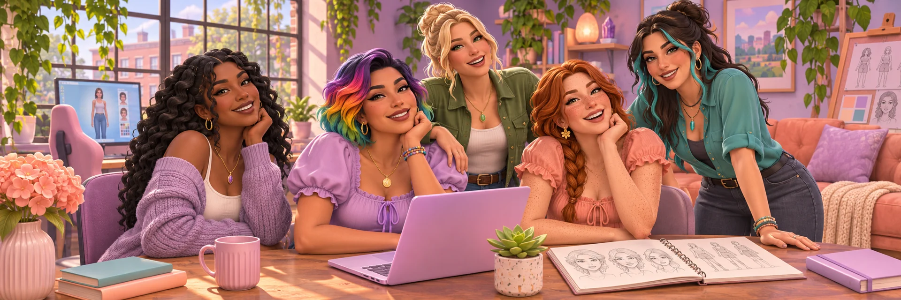

Behind the mods & characters
Hi, I’m Jenn.
Welcome to my studio, where the ideas become characters, mods and the occasional very stubborn problem.

What I make
I make small, cozy things for The Sims 4: mods that smooth a rough edge, add a little surprise, or make a Sim's day a bit softer. You can call me Jenn.
Most of these ideas start with something I'd like in my own game, whether it's a sweet note or a different place for a household to live. I share the mods here as they take shape, along with pictures and stories from making them.
What I care about
- Cozy games
- Kind little details
- Households, not just Sims
- Unexpected gifts
- Notes and surprises
How the mods get made
The current mods are being developed for The Sims 4 1.105. I keep a devlog about the ideas behind them, the things that went wrong and what changed along the way. If you enjoy the technical side, there’s also a post about trying changes on separate copies of saves.
Say hi
You can find my projects on GitHub. If you run into a problem with a mod, open an issue in its repository so I can see what happened.

See what I’m working on →